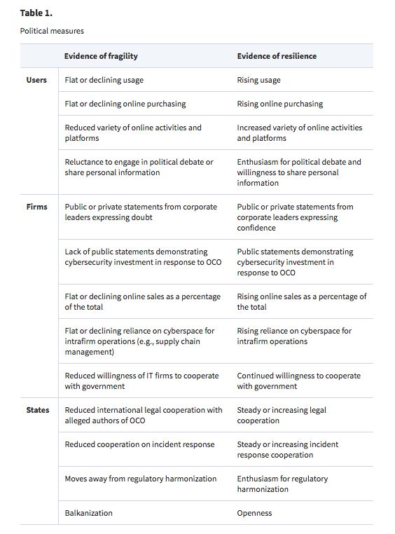
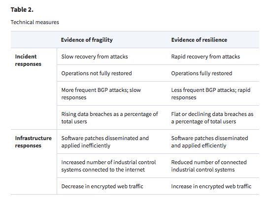

收录于合集
简
约书亚·瑞夫纳 Joshua Rovner
美国南方卫理公会大学政治学副教授
泰勒·穆尔 Tyler Moore
坦迪计算机学院网络安全和信息保障专业副教授，《网络安全杂志》主编
Does the Internet Need a Hegemon?
Abstract
Hegemonic stability theory holds that a dominant power can produce international cooperation by providing public goods and resolving collective action dilemmas. Successful hegemons also resist the temptation to exploit their advantages in order to reduce other states’ fear of domination. This article asks whether or not the internet needs the United States to play a similar role. If so, Washington should pursue policies designed to strengthen internet security while eschewing espionage and cyberattacks that rely on some degree of internet insecurity. If not, it can go on the offensive without fear of undermining the system as a whole. We examine the technical and political fallout from revealed offensive cyberoperations to assess the relative fragility of the internet. Our findings suggest that it is relatively resilient.
参考译文：霸权稳定论认为，霸权国可以通过提供公共物品进行国际合作，解决集体安全困境。成功的霸权国会审慎使用自身优势，降低其他国家对霸权的恐惧。本文提出了一个问题，互联网是否需要美国发挥霸权国的作用。如果需要，美国就应当推行旨在加强网络安全的政策，防止利用互联网薄弱环节所进行的间谍活动、网络攻击。如果不需要，美国便可以无视体系的整体性。我们借已知的进攻性网络战的技术性和政治性影响，评估互联网的相对脆弱性。研究的结果表明，互联网具有相当的弹性。
Keywords
Cybersecurity , Hegemonic Stability Theory ,
Offensive Cyber Operations , Stuxnet , Snowden
网络安全，霸权稳定论，进攻性网络行动，“震网”病毒，斯诺登
Cybersecurity is a US national interest and a global public good. The United States has powerful economic reasons to support a secure and reliable internet, given the amount of commerce and intrafirm business now conducted online. It also has a strong military stake in cybersecurity, given the scope and complexity of communications among military forces and along the chain of command. Cybersecurity is a global public good because it enables access to reliable communications for all users. Everyone benefits from efforts to mitigate vulnerabilities in software code, for instance, whether or not they paid for them. And the worldwide boom in online communications means that securing the internet protects the global economy.
But cybersecurity comes at a cost. The same protections that enable individuals to communicate safely also enable criminals and militants to hide online. In addition, while Washington has a clear interest in cybersecurity, it also seeks to conduct espionage and attack its rivals in cyberspace. Offensive cyberoperations (OCO) are a particularly appealing alternative to war as they avoid the costs and risks of military violence. Perfect cybersecurity would make such operations impossible. Other states know this, of course, which causes them to question US motives. Indeed, the fact that cybersecurity is a global public good does not mean that international cybersecurity cooperation is inevitable, nor that other states welcome US assistance. Fears of state intervention have raised concerns that the internet, once seen as an apolitical bastion of free thought and exchange, will become fragmented as states use it for their own purposes.
The clash of national and global interests in cyberspace is particularly acute because there is no global government to resolve disputes. Sustaining cooperation under anarchy is an enduring puzzle for international relations theorists and animates some of the most enduring debates in political science. Realist scholars view the international system as prone to conflict because there is no higher authority that can enforce agreements among states (Waltz 1979). Liberal theorists, however, posit that international institutions can foster cooperation in part by reducing transaction costs (Keohane 1984). Extensions of this debate, including arguments about the value of institutions, are discussed below. But perhaps the most controversial argument focuses on the role of a hegemon, or a clearly dominant state, in the international system. Hegemonic stability theory (HST) posits that peace and prosperity are more likely when there is a clear hierarchy of states and one undisputed leader. A state with dominant capabilities can sustain cooperation by providing public goods and reducing collective action problems. Incentives to cheat on agreements or free ride are reduced when the hegemon picks up the tab. Hegemons also help coordinate action and deter challengers from threatening the global order.
Some critics of HST argue that hegemony is destabilizing because any state with a preponderance of power will create fear and suspicion among others. Anarchy will compel smaller and weaker states to protect themselves against a predatory hegemon, either by building up their own defenses or by forming balancing alliances. However, defenders note that the hegemon can take steps to reduce such fears by binding itself to international bodies or designing political institutions that constrain leaders, including its own, from rash decisions. Others acknowledge that, while a hegemon may be necessary for establishing order in a deeply unstable environment, it will become less important over time. The emergence of durable international institutions will encourage cooperation after hegemony by improving the quality of information available and by reducing transaction costs. In either case, the dominant power sustains the international order by eschewing parochial actions. Resisting the temptation to exploit its power encourages cooperation by reducing smaller states’ fear of domination.
Contemporary critics might doubt whether or not the United States maintains the ability to play the role of benevolent hegemon, particularly since recent events suggest it cannot protect its own critical systems. During the 2016 presidential campaign, the Russian government allegedly organized the theft of emails from the Democratic National Committee and Hillary Clinton’s campaign chairperson John Podesta. It subsequently used WikiLeaks and other websites to publish the contents online as part of an effort to embarrass Clinton and sow doubt about US institutions. Donald Trump won the election by a very narrow margin, and some observers believe that his victory would have been impossible without Russian interference. Most significantly, US intelligence and law enforcement agencies were unable to prevent the cyberheist, and the Obama administration offered a tepid and vacillating response. This is not the portrait of a state able to play the hegemon on this issue. If anything, the election drama suggests that the United States is playing catch-up. The notion that the United States can provide cybersecurity as a global public good seems increasingly absurd.
But the events of last summer need be put in context. The Russian operation was a modern version of an old political tool Soviet officials call “active measures.” These mostly included propaganda and misinformation designed to bring down government officials, candidates for office, and other prominent political figures. Historically, the record of Soviet active measures against the United States was quite poor (Andrew and Mitrokhin 1999). This time proved different, but had little to do with US cybercapabilities. Instead, it was largely a product of one of the strangest campaigns in US history, including a series of unlikely events that came together to enable Russian efforts and promote Trump’s eventual victory.1 Moreover, even if the United States is vulnerable to propaganda, this does not mean it is less able to influence global cybersecurity. By way of analogy, we do not doubt the fighting strength of the US military based on civilian vulnerability to terrorist attacks.
For reasons of history, geography, and technology, the United States continues to enjoy an extraordinary position in cyberspace. US computer scientists built the internet and experienced predominant influence over the design of institutions that currently govern it. Meanwhile, the National Security Agency (NSA) emerged as the largest signals intelligence organization in the world, investing in extraordinary capabilities for espionage, information assurance, and OCO. Silicon Valley remains the hub for global private sector technology development. And both government and industry benefit from American higher education, which has expanded graduate programs in computer science and related fields. These capabilities remain unaffected by the events of last year. While US influence might decline over time, especially if other states build capabilities that make cooperation with the United Sates unnecessary, so far this has not occurred.
How might the United States use these unique capabilities? Informed by the assumption that cybersecurity is a public good prone to collective action, most see a trade-off between US investments in cyberattacks and espionage for its national security benefit and continued provision of a secure internet for the world. Those advocating for internet security suggest that Washington (1) increase its involvement in internet governance in order to help codify a set of durable rules of the road or (2) decide to give up opportunities for espionage and sabotage by strengthening encryption, alerting technology firms to vulnerabilities in software and taking additional steps to make internet communications inviolable—or both.
Here we use an empirical investigation of response to significant security failures to evaluate whether or not this trade-off is really in effect. We propose five measures of internet resiliency and evaluate the aftermath of the Stuxnet attack on Iran’s nuclear complex and the Snowden revelations about the NSA. Did these events lead to significant changes in user, firm, and state behavior? Such changes would suggest that cybersecurity is vulnerable to collective action problems, or perceived as such, and that great powers risk undermining the security of the internet when they use it as a vehicle for intelligence gathering and covert operations. On the other hand, the absence of significant behavioral change in the wake of Stuxnet and Snowden suggests that fears that cyberattacks will lead to erosion of the public good may be exaggerated. In this case, the United States could more safely pursue its dual interests without fear of eroding cybersecurity.
We proceed in three steps. The first section describes HST and applies it to cyberspace. While new technologies have led some to question the relevance of classic international relations theories, we explain why HST offers a useful framework for the cybersecurity policy debate. The second section explores the cases in detail. We find that the internet proved resilient, despite fears that OCO would undermine the cooperation needed to sustain it. This is significant both for what it suggests about the consequences of OCO, but also because the current debate exists mostly in the abstract. Policy arguments about internet security primarily weigh the possible effects of US policy, instead of studying the outcomes achieved so far. The conclusion discusses those outcomes and describes the implications for international relations (IR) theory and US cybersecurity policy.
Is the Internet’s Security Fragile？
Two recent revelations of clandestine US efforts to penetrate or attack information systems previously assumed to be secure provide an opportunity to measure the internet’s fragility. The first is the Stuxnet attack against Iran’s nuclear program. The second involves former NSA contractor Edward Snowden’s revelations about the agency in 2013. We describe the response in both cases. The basic test is simple: if the optimists are right, then these cases should not have dramatically dampened enthusiasm for internet communications and commerce. But dramatic changes, including signs of retrenchment from users, firms, and states, would indicate that cybersecurity depends on hegemonic restraint.
We develop and employ five measures of fragility to assess the unintended results of Stuxnet and the Snowden revelations. The first three are political, and the last two are technical. The internet operates as a kind of global common, which only exists because of human engineering and maintenance. Thus, a useful analytical framework must also pay attention to the technical details of internet operations, both before and after political shocks. Our approach relies in equal measure on IR theory, political economy, and computer science.
To be clear, we do not attempt to address all aspects of cybersecurity. Our conception relies on a classic construct, abbreviated CIA, which stands for confidentiality, integrity, and availability. Cybersecurity obtains when all three goals are achieved. In the ideal, users safely communicate without risking unauthorized disclosure of information, without having that information modified or erased, and without being denied access to information or information systems.10 Because a sufficient technical analysis is beyond the scope of this article, we focus squarely on resilience as the most germane to understanding the fallout from OCO. Describing and measuring resilience in these cases is crucial for understanding cybersecurity in periods during which observers fear that cyberspace has become insecure.
The following section outlines the measures we employ. After introducing the categories, we report on the data observed in the context of Stuxnet and the Snowden disclosures. The evidence is not comprehensive, of course, as both events were recent. Moreover, we do not claim that Stuxnet and Snowden are perfectly representative of all conceivable cyberattacks. However, the logic of the framework is generalizable. Indeed, by describing broad political and technical measures of fragility, we believe it provides a useful framework for analyzing political and technological responses to similar incidents. We summarize the framework in Tables 1 and 2.


Summary
We develop new measures for assessing whether or not the underlying technology is physically capable of absorbing cyberattacks, while focusing on the importance of political perceptions following cyberattacks in determining cybersecurity policy. Our measures of fragility show that while Stuxnet and Snowden have had important consequences, the system itself has proven resilient. Users have not lost enthusiasm for communicating online, despite repeated warnings about privacy violations and vulnerability to surveillance. The most important consequence seems to have been a small reduction in web searches for sensitive terms, though it is unclear whether the result lasted beyond the first few months after the scandal broke. And while firms have elected to pursue defenses on their own and have maintained a skeptical view toward cooperation with governments on cyberthreats, such strained relations predate the Stuxnet and Snowden controversies. Finally, while states have increased efforts to shore up their cybersecurity capabilities in the aftermath of Stuxnet and Snowden, they have not reduced cooperation on cybersecurity in general.16
Cybersecurity may have elements of a global public good, but this article demonstrates that scholars should be investigating rather than assuming that the maintenance of global public goods requires hegemonic leadership. The two cases we examine show cybersecurity to be resilient even when the hegemon is not playing by the rules. The policy implications are straightforward. The system appears resilient and self-sustaining even under stress. The expanse of the internet—a hodge-podge of state institutions, international coordinating bodies, and private firms—may make US control unworkable even if desirable. Such resiliency means, however, that United States efforts to protect its national security, even developing offensive tools for cyberspace, may not have the deleterious trade-offs on cybersecurity that HST would expect. A number of legal, political, and operational factors influence decisions regarding intelligence collection and OCOs. None of these factors should be taken lightly, and the preceding discussion is not meant to offer policymakers a green light for any and all cybersecurity policies. Our findings nonetheless suggest that policymakers should not be overly concerned that their actions will lead to significant harm to the internet.
文章有删减，原文链接: https://pan.baidu.com/s/1QvsU-V8jQC1ZWFapM8QV3g 密码: pr64
文章来源：Journal of Global Security Studies, 1 July 2017
编辑：里仝
学人约稿与入群邀请